Likeke Trail
From the Likelike highway to the Pali
Kris’s dad Kwansei recommended the Likeke Trail as an interesting short hike. We read a review of the trail on Backyard Oahu, and it seemed pretty simple at only 2 miles. Kwansei had helped to engineer and plan the golf course built just north of the trail, and was interested to revisit the country he’d spent many days bushwhacking through years ago.
Kris helped us out by driving a car which we left at our exit for the trail, at the start of the Old Pali Road. Then she dropped us off on the Like-like highway, right before a tunnel. As Kris drove away, I dropped my camera bag, but thought nothing of it. Imagine my surprise when as it turned out, the camera display was badly broken! The screen is useless. I have to take it back to the store this week.
Kwansei and I hunted around for the trail, finally accepting that it must be the thin line of pink flagging leading steeply down through mud and thick brush! Here we go then, as is typical on Hawaii trails, we’ve hiked under 10 minutes and I’m caked with dirt and sweat :-).
The trail led up an intriguing gully, where we sometimes used hands to pull up on roots. It must have been interesting, because we quit seeing red flagging, though we went up and up. Finally we started to worry. “This trail is supposed to traverse the range to the east right?” Kwansei mentioned that it might be kind of a hunting trail we are on now. In general, the wild pigs come down at night to drink and wallow in mud pits, but then climb back up to sleeping holes in the day. This trail would allow hunters to get up to the sleeping zone. Finally, as the gully steepened, any vestige of a real trail disappeared, clearly we were following a pig trail.
Coming back down, we found the flagging and got back on track. After a few minutes we came out of the forest cover into a zone of wet grass on a hogsback ridge. We could see the golf course below and to the east. Looking back west we made out a piece of the Like-like highway. We wanted to eventually get down to the golf course and look at a beautiful black stone the engineers had found in the forest, so we kept an eye as we continued to where we were above it.
Kwansei told me about many plants we saw. He knew the Koa trees that natives used to make canoes. The tea leaves used to wrap meat for steaming in buried pits. The strong branches used to make rope. The kukui plant which is chopped up after boiling to remove the oil, and added to poke. If you don’t remove the oil you’ll get the runs something fierce!
The travel was rough, and we completely relied on the pink flagging, probably the same flagging put up by the Backyard Oahu author 5 years ago.
We talked about the way Hawaii has so many immigrant groups. The plantation owners, ever wanting the cheapest labor possible, would go to a new country and advertise heavily: China, Okinawa, Portugal, the Phillipines, and other south pacific islands. Lots of Germans came too, though likely in administrative and owning capacity. Does that explain that the pronunciation is “Havaii” though written “Hawaii?”
Kwanseis brother is a great pig hunter, and I learned about many saavy things he’d do. The dogs are very important, and when they are sick, it’s worse than the hunter being sick. Over the years, he’d worked out the best medication for the dogs with special medicine from the mainland. On a hunt, if the pig (which can weigh 300 pounds) charges you, it comes extremely fast. Happily, you could jump out of the way and he won’t be able to turn in time. Otherwise, the pig might follow it’s trail up the mountain to a hole. Here, the dogs are essential, hopefully leading the hunter to where the pig went to ground, either in a hole or in thick brush. As we walked, we came upon a family of mud wallows with fresh pig tracks. Clearly, they were sleeping uphill now. Kwansei guessed that they went down to the reservoir below us to drink. Interestingly, the reservoir was created after a major flood destroyed homes as it washed down from the mountain. The Corp of Engineers therefore created a park with a lake, also a high berm to block water from homes below.
In pig hunting, I recognized the same kind of mental and physical stimulation found in mountain climbing. There are many variables that need to align for success, many strategies for your equipment. Nowadays, people don’t seem to want wild pig meat, preferring a quick trip to Mcdonalds. But there was a time when the skill was important to all the plantation workers on the islands. The workers would strike in response to importation of a whole new group of immigrants and the accompanying cut in pay. It seems to me that management hoped to bring in a new group, completely dependent on them and not the existing groups. In this way, they’d have some people who wouldn’t strike, and just take what they were given. But incredibly, the disparete groups, divided by religion, language and ethnic background, worked together. On a long strike, the people could live indefinitely on wild pig meat, on fish, and gathered fruits. In this way, they created a fascinating culture. As a Hawaiian comedian once said, Hawaii is not a “melting pot”, it’s more like a bowl of salad. All the groups are there, distinguishable, and seperate. But they are also together.
We laughed about a funny approach to getting ahead in the world that some Chinese immigrants undertook. Most plantation workers planned to return to their home country one day. Sometimes they would live in a all-male dormatory, and hire Japanese women to do laundry. But the Chinese planned to stay, and the law at the time required you to be native Hawaiian to get land. Solution - marry a Hawaiian! These crafty guys therefore got a shortcut to wealth. So there are people who look native Hawaiian, but have Chinese last names.
Now we were above the west end of the golf course, and decided to follow a promising creek bed down to it. At first the going was easy, with a little bit of rock climbing in the bed too. After about 15 minutes, we ran into a thick mat of Hau bush (outriggers of canoes are made with this). We skirted the first salvos of this stuff, but finally it choked the bed off completely, and even extended into a mat up the banks and over our heads. To encourage us, we suddenly came upon a cache of dozens of golf balls! So we were in or near the course. But going further would have been very hard. Neither of us had watches, but I really had the feeling that our 2 allocated hours were long finished, and we still had a long ways to go. So we turned around, but I really felt like Kwansei could have spent all day wandering in there, never tiring (though I was getting tired!).
Regaining the trail, we talked about another objective. Kwansei had seen stone walls used by Hawaiians hundreds of years ago to mark their property in the forest. He hoped we could see some of those. At one promising area of big mango trees and grassy forest floor, we again left the trail and searched among the grass and mud wallows for remnant walls. We found nothing, so kept on.
Now we saw evidence of the huge work required to construct the trail itself. It dropped on a contour into and out of creek beds, in one case, climbing over 100 feet with 2 switchbacks on a very steep slope. “Kalea couldn’t come here” said Kwansei, knowing that his energetic young dog might plunge off the trail!
We got the sense that Hawaiians had lived among these creeks long ago. Sure enough, after a time we reached another mango forest, with big trees seperated by grass. I was very pleased to identify a low wall, squared, and protecting a raised uplift of grassy soil. Kwansei noticed a greater diversity of flowering plants in this area as well.
It’s an interesting and somewhat chilling place. When Kamahamehas army attacked Oahu, they drove warriors up from the beaches to the forest, and finally to the crest of the island where hundreds were eventually killed by leaping from the crest. They landed in the forest near here, and Kwansei discussed how great caches of skulls had been found. It’s sad to think about. At one time, the place where we stood had been cultivated, with homes, flowers and society. The attack, flight and death that led through here must have been nightmarish. Indeed, Kwansei remembered all kinds of unexplainable troubles during construction of the golf course. For example, a surveyor couldn’t see markers through his scope if his line of sight passed through certain areas. With the naked eye, he’d see it in the distance, but everything was blurry or marred somehow in the scope. Befitting the personality of a practical engineer, he moved the markers to avoid sighting through the sensitive regions. Kwansei recalled how, eventually, after many troubles, a spiritual healer was called into the newly built golf course lodge. Kwansei was there, and the woman spoke to the aggrieved spirits in their native tongue. The troubles ceased, paving the way for the pleasant sleep of commerce.
However, bankruptcy and ruin awaited the golf course owner. Having spent hundreds of millions of dollars to clear the land and lay the course, the Japanese financial crisis required him to sell the new course at fire sale prices. Now of course, it makes a profit. Kwansei said that such a course could never be built now, considering more stringent environmental regulations. Still, he spent much time verifying that the lodge wasn’t visible from any road. Now, with the new H3 highway, it is a bit more visible. I think they did a good job.
Finally we came to a highlight of the trail - a beautiful waterfall that comes from a hole in the crest at the Pali highway. I filled my water bottle and drank, feeling safe after Kwanseis accounts of how fresh water filters through the mountains and later is used as piped drinking water. We saw other people for the first time; a couple with a big dog. They came from the highway, now above us, and didn’t plan to go further west on the route we’d come from. Indeed, I believe very few people travel it, and I felt fortunate to have wandered the lost path with such an “insider!”
We came out suddenly on the Old Pali road. Built with superhuman labor in the 19th century, huge blocks had been laid into place to form a rough “road.” Even still, we couldn’t imagine horses pulling carts up it, probably because now it’s deteriorated and is being taken over by huge roots that make the surface even more bumpy. Crossing a bamboo forest, Kwansei said that the young shoots are valuable, as they are boiled and eaten in Japanese dishes. He used to collect and sell them. Within the space of a few minutes, he identified almost a dozen, in which time I saw two, and that with hard looking!
We met the now closed “early 20th century” Pali road, a nice thoroughfair, like a parkway, with bridges built from 1911 on. Somehow we’d missed a section of trail Kwansei remembered, as he’d been on this section before. After a mile walk on the road (which we both found a little boring after a while), Kwansei found the trail we should have come out on. Next time then!
Wild chickens seemed to own the road from this point, always clucking around us and leisurely crossing and re-crossing the pavement. After a period of intense vandalism, murder, and dumped bodies, the state sealed this road at both ends, making it much for the better.
We were now back in “civilization,” and a short walk brought us to a war memorial near the car. While we studied the names, Kris walked up nonchalantly. “Hi!” she said. As it turned out, we were so late that the family sent Kris out to look for us. Kwansei had to roast pig meat for the Tengan Christmas party tonight, and would be hard pressed to finish in time. I knew it was late, but Kwansei took the cake for losing track of time: it was 2 pm and he thought it was a little after 11! To me, this is evidence of the fun he has wandering through such land and history.
Thanks for a great hike, Kwansei!
|
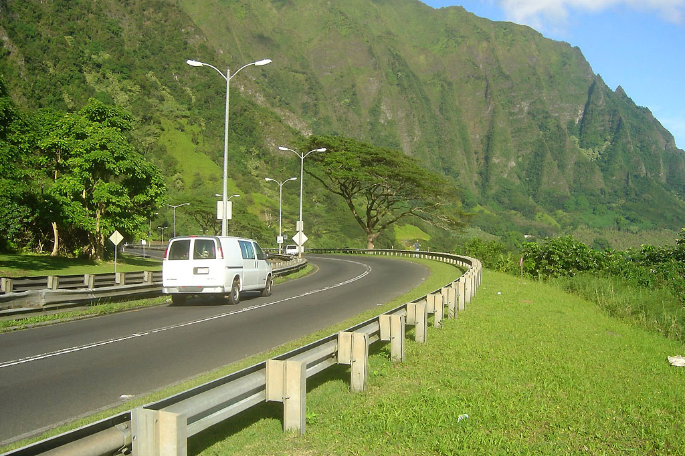 The view from the trailhead on the Like-like Highway. |
|
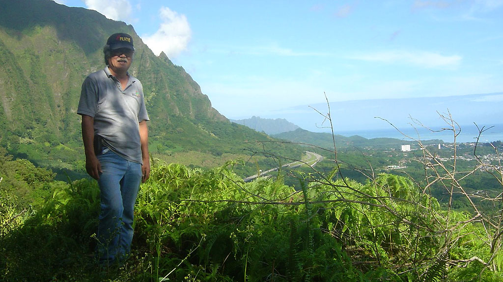 The first opening out of thick brush. |
|
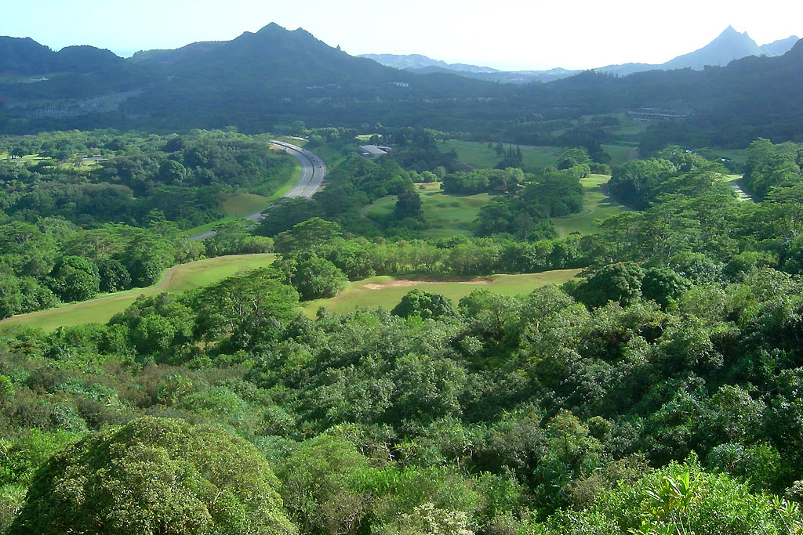 The golf course from the southwest. |
|
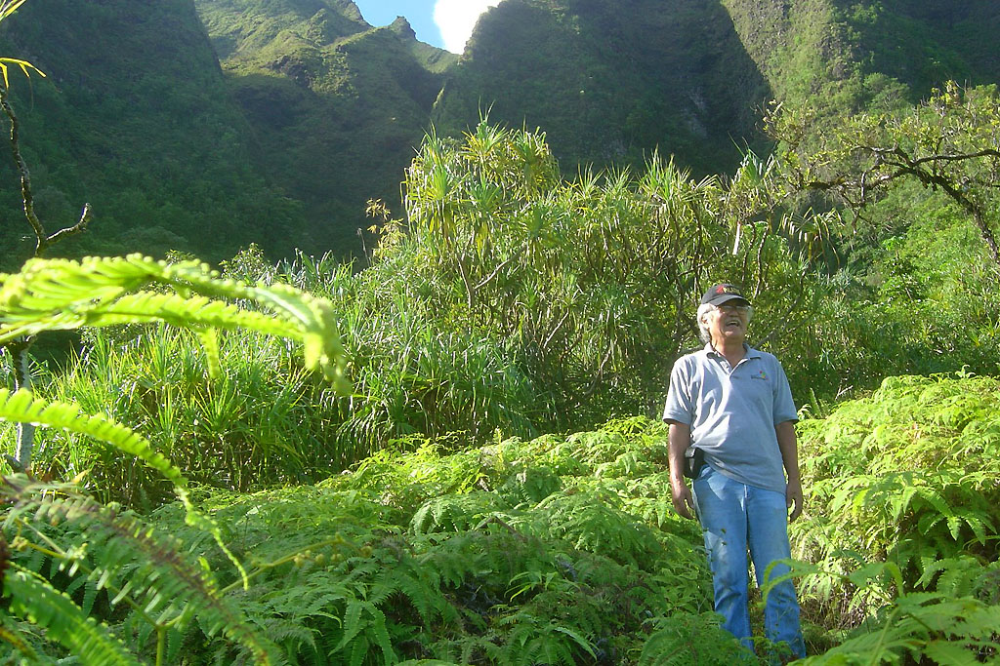 Kwansei looking out above the golf course. |
|
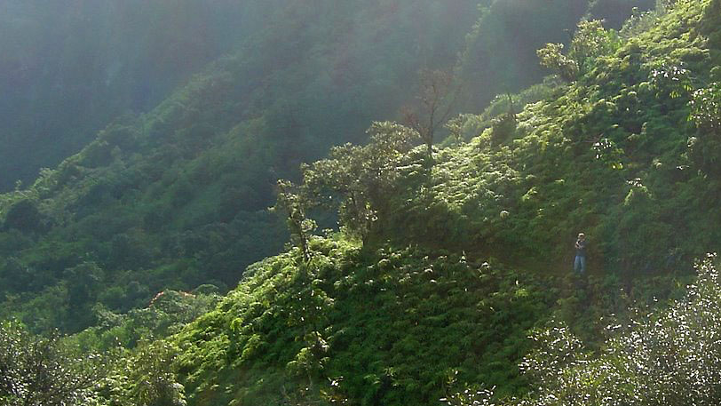 I'm standing on the trail, one ridge away. |
|
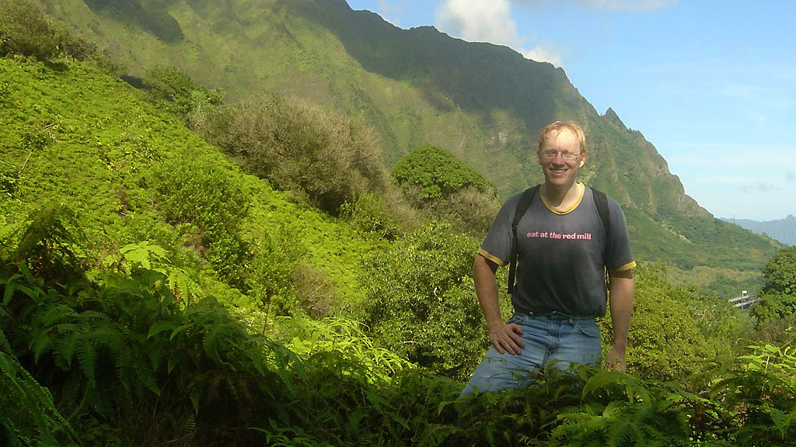 The forest was very hot! |
|
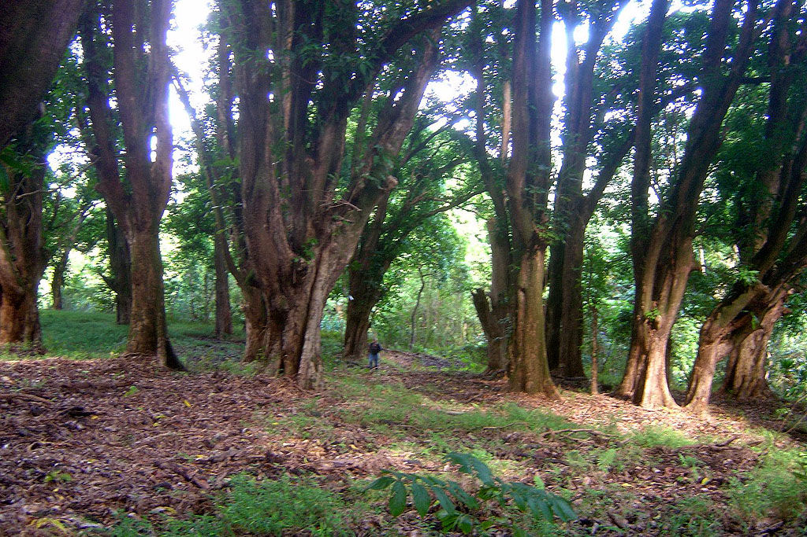 The first mango forest, where we found no walls. |
|
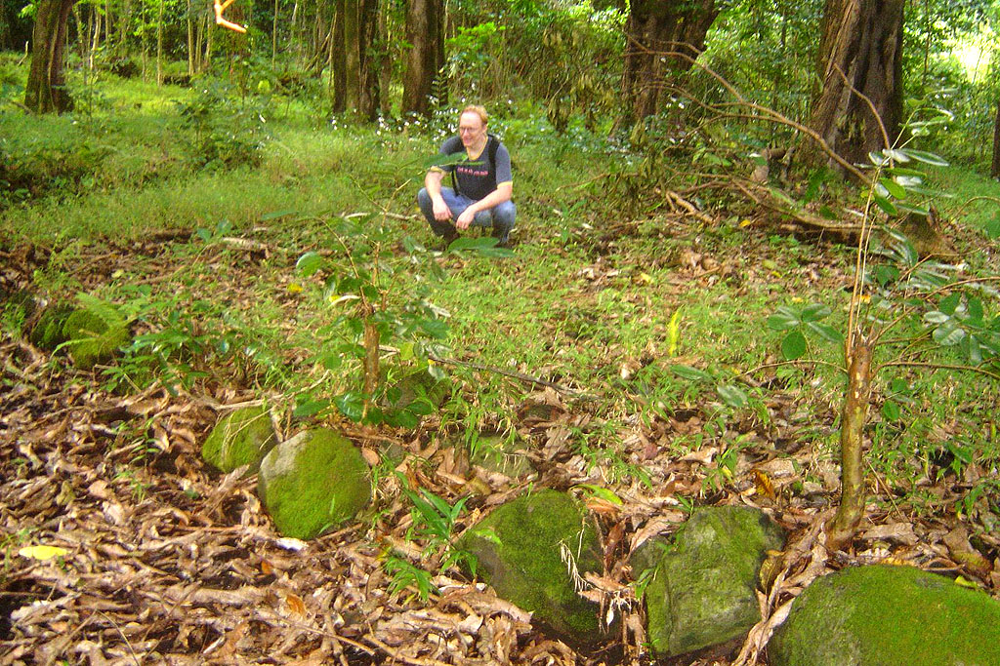 I'm sitting within the rock walls of an ancient property. |
|
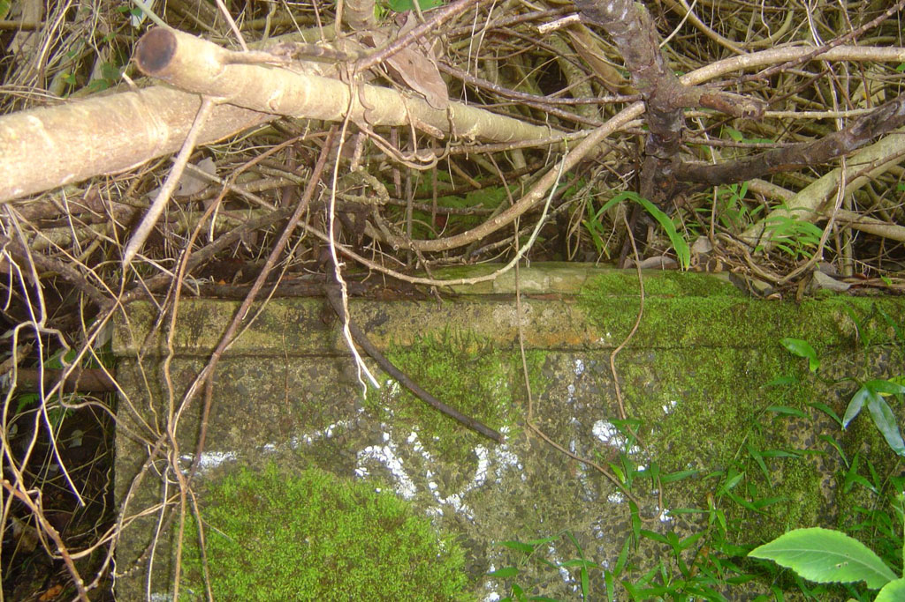 A landowner created this hidden catchment long ago to store water. |
|
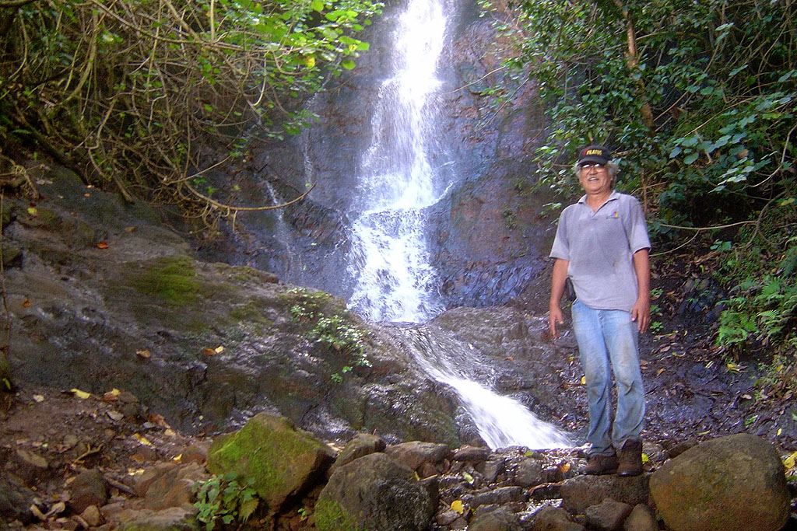 Kwansei at the waterfall from the Pali |
|
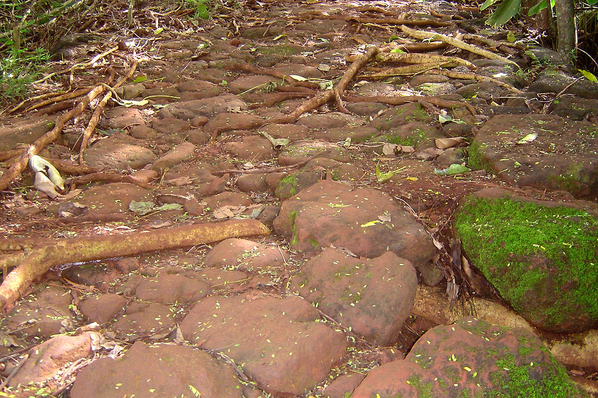 The Old Pali Road, being reclaimed by the jungle. |
{kind=link}
{kind=link}
{kind=link}
{kind=link}
{kind=link}
{kind=link}
{kind=link}
{kind=link}
{kind=link}
{kind=link}
{kind=link}